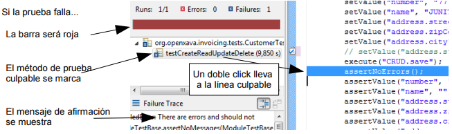
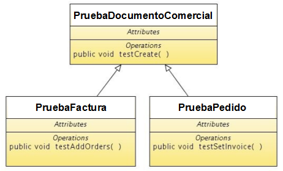
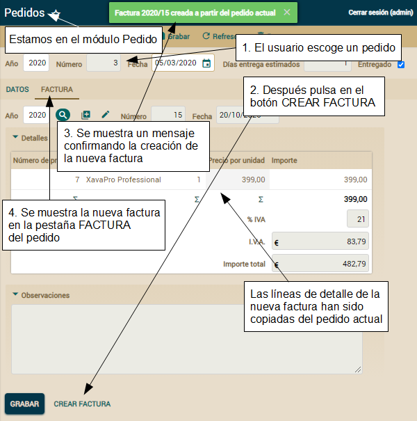

Ahora, reejecuta la prueba. Ya que nombre es una propiedad requerida, un mensaje de error será mostrado al usuario, y el objeto no se grabará:

El assert culpable es assertNoErrors(), el cual además de fallar muestra en la consola los errores mostrados al usuario. Por eso, en la consola de ejecución de tu prueba verás un mensaje como este:
Como puedes ver, primero creas los objetos al estilo convencional de Java. Fíjate que los asignamos a miembros de instancia, así puedes usarlos dentro de la prueba. Entonces, los marcas como persistentes, usando el método persist() del EntityManager de JPA. Para obtener el PersistenceManager solo has de escribir getManager() porque tienes un import estático arriba:
Es un simple bucle por todas las entidades usadas en la prueba, borrándolas. Para borrar una entidad con JPA has de usar el método remove(), aunque en este caso has de usar el método merge() también (1). Esto es porque no puedes borrar una entidad desasociada (detached entity). Al usar commit() en crearProductos() todas la entidades grabadas pasaron a ser entidades desasociadas, porque continúan siendo objetos Java válidos pero el contexto persistente (persistent context, la unión entre las entidades y la base de datos) se perdió en el commit(), por eso tienes que reasociarlas al nuevo contexto persistente. Este concepto es fácil de entender con el siguiente código:
Esta prueba verifica que el primer autor en la lista es “JAVIER CORCOBADO”, recuerda crearlo antes de ejecutar la prueba. Entonces va al detalle y confirma que tiene una colección llamada "productos" con 2 productos: “Arco iris de lágrimas” y “Ritmo de sangre”, antes de ejecutar la prueba créalos y asocialos a "JAVIER CORCOBADO". De paso, has aprendido como usar los métodos assertValueInList(), assertValueInCollection() y assertCollectionRowCount().
Podemos usar la misma técnica para probar el módulo Categoria:
En este caso solo verificamos que en la lista las tres primeras categorías son “MÚSICA”, “LIBROS” y “SOFTWARE”. Acuerdate de crearlos antes de ejecutar esta prueba.
Puedes ver como la técnica de usar datos preexistentes de una base de datos de prueba te permite crear pruebas más simples. Empezar con una prueba simple e ir complicándolo bajo demanda es una buena idea.
Al introducir el número de cliente el nombre del cliente se rellena con un valor apropiado. La prueba confía en que el cliente 1 con nombre "JAVIER PANIZA" existe, deberías crearlo antes de ejecutar la prueba. Ya hemos asociamos el cliente 1 con la factura actual.
Y ahora viene la parte más peliaguda de la prueba: añadir las líneas de detalle:
Probar una colección es exactamente igual que probar cualquier otra parte de tu aplicación, solo has de seguir los mismos pasos que un usuario haría con el navegador. Tienes métodos como setValueInCollection(), assertValueInCollection() o assertCollectionRowCount() para trabajar con colecciones. Nota que estos métodos tienen el nombre de la colección como primer argumento y algunos reciben el número de fila siendo el 0 la primera fila. Recuerda añadir a la base de datos los productos 1 y 2 con sus correspondientes descripciones antes de ejecutar esta prueba.
Ahora que tenemos los detalles añadidos, vamos a llenar los datos restantes y grabar la factura. Los datos restantes se establecen en el método ponerOtrasPropiedades():
Después de buscar la factura creada verificamos que los valores que hemos grabado están ahí. Si la prueba llega a este punto tu módulo Factura funciona bien. Solo nos queda borrar la factura creada para que la prueba se pueda ejecutar la siguiente vez. Hacemos esto en el método borrar():
Factura ha sido refactorizada para usar herencia y también hemos usado herencia para añadir una nueva entidad,
Pedido. Además, esta entidad
Pedido tiene relación con
Factura. Lo cual es una nueva funcionalidad, por ende has de probar todas estas nuevas características.
Dado que
Factura y
Pedido tienen bastantes cosas en común (la parte de
DocumentoComercial) podemos refactorizar las pruebas para usar herencia, y así eludir el dañino “copiar y pegar” también en tu código de prueba.
Crear una prueba de módulo abstracta
Si examinas la prueba para crear una factura, en el método
testCrear() de
PruebaFactura. Puedes notar que probar la creación de una factura es exactamente igual que probar la creación de un pedido. Porque ambos tienen año, número, fecha, cliente, detalles y observaciones. Por tanto, aquí la herencia es una buena herramienta para la reutilización de código.
Vamos a renombrar
PruebaFactura como
PruebaDocumentoComercial, y entonces crearemos
PruebaFactura y
PruebaPedido a partir de él. Éste es el diagrama UML de esta idea:

Primero renombra tu actual clase
PruebaFactura a
PruebaDocumentoComercial, y después haz los cambios indicados en el siguiente código:
package com.tuempresa.facturacion.pruebas;
import java.time.*;
import java.time.format.*;
import javax.persistence.*;
import org.openxava.tests.*;
import static org.openxava.jpa.XPersistence.*;
abstract public class PruebaDocumentoComercial // Añade abstract a la definición de clase
extends ModuleTestBase {
private String numero;
public PruebaDocumentoComercial(
String nombrePrueba,
String nombreModulo) // nombreModulo añadido como argumento en el constructor
{
super(nombrePrueba, "Facturacion", nombreModulo); // nombreModulo en vez de "Factura"
}
public void testCrear() throws Exception { … } // Como el original
private void anyadirDetalles() throws Exception { … } // Como el original
private String getNumero() {
if (numero == null) {
Query query = getManager().
createQuery(
"select max(f.numero) "
+ "from DocumentoComercial f " // Factura cambiada por DocumentoComercial
+ "where f.anyo = :anyo");
query.setParameter("anyo", LocalDate.now().getYear());
Integer ultimoNumero = (Integer) query.getSingleResult();
if (ultimoNumero == null) ultimoNumero = 0;
numero = Integer.toString(ultimoNumero + 1);
}
return numero;
}
private void borrar() throws Exception { … } // Como original
private void verificarCreado() throws Exception { … } // Como original
private void grabar() throws Exception { … } // Como original
private void ponerOtrasPropiedades() throws Exception { … } // Como original
private void escogerCliente() throws Exception { … } // Como original
private void verificarValoresDefecto() throws Exception { … } // Como original
private String getAnyoActual() { … } // Como original
private String getFechaActual() { … } // Como original
}
Como ves has tenido que hacer unos pocos cambios para adaptar
PruebaDocumentoComercial. Primero, la has declarado abstracta, de esta forma esta clase no es ejecutada por OpenXava Studio como una prueba JUnit, es solo válida como clase base para crear pruebas, pero ella misma no es una prueba.
Otro cambio importante nos lo encontramos en el constructor, donde ahora tienes
nombreModulo en vez de “Factura”, así puedes usar esta prueba para
Pedido,
Factura o cualquier otro módulo que quieras. El otro cambio es un simple detalle: has de cambiar “Factura” por “DocumentoComercial” en la consulta para obtener el siguiente número.
Ahora ya tienes una clase base lista para crear los módulos de prueba para
Pedido y
Factura. Hagámoslo sin más dilación.
Prueba base abstracta para crear pruebas de módulo concretas
Crear tu primera versión para
PruebaFactura y
PruebaPedido es simplemente extender de
PruebaDocumentoComercial. Nada más. Mira el código de
PruebaFactura:
package com.tuempresa.facturacion.pruebas;
public class PruebaFactura extends PruebaDocumentoComercial {
public PruebaFactura(String nombrePrueba) {
super(nombrePrueba, "Factura");
}
}
Y
PruebaPedido:
package com.tuempresa.facturacion.pruebas;
public class PruebaPedido extends PruebaDocumentoComercial {
public PruebaPedido(String nombrePrueba) {
super(nombrePrueba, "Pedido");
}
}
Ejecuta estas dos prueba y verás como
testCrear(), heredado de
PruebaDocumentoComercial, se ejecuta en ambos casos, contra su módulo correspondiente. Con esto estamos probando el comportamiento común para
Pedido y
Factura. Probemos ahora la funcionalidad particular de cada uno.
Añadir nuevas pruebas a las pruebas de módulo extendidas
Hasta ahora hemos probado como crear una factura y un pedido. En esta sección probaremos como añadir pedidos a una factura en el módulo
Factura y como establecer la factura a un pedido en el módulo
Pedido.
Para probar como añadir un pedido a una factura añade el método
testAnyadirPedidos() a
PruebaFactura:
// Esta prueba confía en que al menos exista una factura y un pedido
public void testAnyadirPedidos() throws Exception {
login("admin", "admin");
assertListNotEmpty(); // Esta prueba confía en que ya existen facturas
execute("List.orderBy", "property=numero"); // Para usar siempre el mismo pedido
execute("List.viewDetail", "row=0"); // Va al modo detalle editando la primera factura
execute("Sections.change", "activeSection=1"); // Cambia a la pestaña 1
assertCollectionRowCount("pedidos", 0); // Esta factura no tiene pedidos
execute("Collection.add", // Pulsa el botón para añadir un nuevo pedido, esto te lleva
"viewObject=xava_view_section1_pedidos"); // a la lista de pedidos
execute("AddToCollection.add", "row=0"); // Escoge el primer pedido de la lista
assertCollectionRowCount("pedidos", 1); // El pedido se ha añadido a la factura
checkRowCollection("pedidos", 0); // Marca el pedido, para borrarlo
execute("Collection.removeSelected", // Borra el pedido recién añadido
"viewObject=xava_view_section1_pedidos");
assertCollectionRowCount("pedidos", 0); // El pedido ha sido borrado
}
En este caso asumimos que hay al menos una factura y que la primera factura de la lista no tiene pedidos. Antes de ejecutar esta prueba, si no tienes facturas todavía, crea una sin pedidos, o si ya tienes facturas, asegúrate de que la primera no tiene pedidos.
Para probar como asignar una factura a un pedido añade el método
testPonerFactura() a
PruebaPedido:
public void testPonerFactura() throws Exception {
login("admin", "admin");
assertListNotEmpty(); // Esta prueba confía en que existen pedidos
execute("List.viewDetail", "row=0"); // Va a modo detalle editando la primera factura
execute("Sections.change", "activeSection=1"); // Cambia a la pestaña 1
assertValue("factura.numero", ""); // Este pedido todavía no tiene
assertValue("factura.anyo", ""); // una factura asignada
execute("Reference.search", // Pulsa en el botón para buscar la factura, esto te
"keyProperty=factura.anyo"); // lleva a la lista de facturas
String anyo = getValueInList(0, "anyo"); // Memoriza el año y el número de
String numero = getValueInList(0, "numero"); // la primera factura de la lista
execute("ReferenceSearch.choose", "row=0"); // Escoge la primera factura
assertValue("factura.anyo", anyo); // Al volver al detalle del pedido verificamos
assertValue("factura.numero", numero); // que la factura ha sido seleccionada
}
En este caso asumimos que hay al menos un pedido y el primer pedido de la lista no tiene factura. Antes de ejecutar esta prueba, si no tienes pedidos, crea uno sin factura, o si ya tienes pedidos, asegúrate de que el primero no tiene factura.
Con esto ya tienes tus pruebas listas. Ejecútalas y obtendrás el siguiente resultado:

Fíjate que la prueba base
PruebaDocumentoComercial no se muestra porque es abstracta. Y
testCrear() de
PruebaDocumentoComercial se ejecuta para
PruebaFactura y
PruebaPedido.
No solo has adaptado tu código de pruebas al nuevo código de
Facturacion, sino que también has aprendido como usar herencia en el mismo código de pruebas.
Vamos a escribir el código JUnit para la sección
Lógica de negocio básica. Recuerda, el código no está terminado si no tiene pruebas JUnit. Puedes escribir las pruebas antes, durante o después del código principal. Pero siempre has de escribirlas.
El código de prueba mostrado aquí no es solo para darte un buen ejemplo, sino también para enseñarte maneras de probar diferentes casos en tu aplicación OpenXava.
Modificar la prueba existente
Crear una nueva prueba para cada nuevo caso parece una buena idea desde un punto de vista estructural, pero en la mayoría de los casos no es práctico, porque de esa forma tu código de prueba crecerá muy rápido, y con el tiempo, ejecutar todas las pruebas supondrá muchísimo tiempo.
El enfoque más pragmático es modificar el código de prueba existente para cubrir todos los nuevos casos que hemos desarrollado. Hagámoslo de esta forma.
En nuestro caso, la mayoría del código de esta lección aplica a
DocumentoComercial, por tanto vamos a modificar el método
testCrear() de
PruebaDocumentoComercial para ajustarlo a la nueva funcionalidad. Dejamos el método
testCrear() tal como muestra el siguiente código:
public void testCrear() throws Exception {
login("admin", "admin");
calcularNumero(); // Añadido para calcular primero el siguiente número de documento
verificarValoresDefecto();
escogerCliente();
anyadirDetalles();
ponerOtrasPropiedades();
grabar();
verificarBeneficioEstimado(); // Prueba @Formula
verificarCreado();
borrar();
}
Como ves, añadimos una nueva línea, después de
login(...), para calcular el siguiente número de documento, y una llamada al nuevo método
verificarBeneficioEstimado().
Ahora nos conviene más calcular el siguiente número de documento al principio para usarlo en el resto de la prueba. Para hacer esto, cambia el viejo método
getNumero() por los dos métodos mostrados en el siguiente código:
private void calcularNumero() {
Query query = getManager().createQuery(
"select max(f.numero) from " +
modelo + // Cambiamos DocumentoComercial por una variable
" f where f.anyo = :anyo");
query.setParameter("anyo", LocalDate.now().getYear());
Integer ultimoNumero = (Integer) query.getSingleResult();
if (ultimoNumero == null) ultimoNumero = 0;
numero = Integer.toString(ultimoNumero + 1);
}
private String getNumero() {
return numero;
}
Anteriormente, teníamos solo
getNumero() que calculaba y devolvía el número, ahora tenemos un método para calcular (
calcularNumero()), y otro para devolver el resultado (
getNumero()). Puedes notar que la lógica del cálculo tiene un pequeño cambio, en vez de usar “DocumentoComercial” como fuente de la consulta usamos
modelo, una variable. Esto es así porque ahora la numeración para facturas y pedidos está separada. Llenamos esta variable, un campo de la clase de prueba, en el constructor, tal como muestra el siguiente código:
private String modelo; // Nombre del modelo para la condición. Puede ser 'Factura' o 'Pedido'
public PruebaDocumentoComercial(String nombrePrueba, String nombreModulo) {
super(nombrePrueba, "Facturacion", nombreModulo);
this.modelo = nombreModulo; // El nombre del módulo coincide con el del modelo
}
En este caso el nombre de módulo,
Factura o
Pedido, coincide con el nombre de modelo,
Factura o
Pedido, así que la forma más fácil de obtener el nombre de modelo es desde el nombre de módulo.
Veamos el código que prueba la nueva funcionalidad.
Verificar valores por defecto, propiedades calculadas y @Calculation
En esta lección hemos hecho algunas modificaciones en los valores por defecto. Ahora, el valor por defecto para
numero ya no se calcula mediante un
@DefaultValueCalculator en su lugar usamos un método de retrollamada JPA. Para probar este caso hemos de modificar el método
verificarValoresDefecto() como ves en el siguiente código:
private void verificarValoresDefecto() throws Exception {
execute("CRUD.new");
assertValue("anyo", getAnyoActual());
// assertValue("numero", getNumero()); // Ahora el número no tiene valor inicial...
assertValue("numero", ""); // ... al crear un documento nuevo
assertValue("fecha", getFechaActual());
}
Verificamos que
numero no tiene valor inicial, porque ahora
numero no se calcula hasta el momento de grabar el documento (sección
Cálculo de valor por defecto multiusuario). Cuando el documento (factura o pedido) se grabe verificaremos que
numero se calcula.
Cuando la línea se añade podemos verificar el cálculo de
importe de
Detalle (la propiedad calculada simple, sección
Propiedad calculada simple), el valor por defecto para
precioPorUnidad (
@DefaultValueCalculator, sección
Usar @DefaultValueCalculator) y las propiedades de importes del documento (sección
Propiedades de total de una colección). Entre las propiedades de total probamos
porcentajeIVA cuyo valor por defecto se calcula leyendo de un archivo de propiedades. Todo esto lo probamos haciendo unas ligeras modificaciones en el ya existente método
anyadirDetalles():
private void anyadirDetalles() throws Exception {
assertCollectionRowCount("detalles", 0);
// Antes de ejecutar esta prueba asegurate de que
// producto 1 tenga 19 como precio y
// producto 2 tenga 20 como precio
// Añadir una línea de detalle
setValueInCollection("detalles", 0, "producto.numero", "1");
assertValueInCollection("detalles", 0,
"producto.descripcion", "Peopleware: Productive Projects and Teams");
assertValueInCollection("detalles", 0,
"precioPorUnidad", "19,00"); // @DefaultValueCalculator
setValueInCollection("detalles", 0, "cantidad", "2");
assertValueInCollection("detalles", 0,
"importe", "38,00"); // Propiedada calculada, sección 'Propiedad calculada simple'
// Verificando propiedades de total de la colección
assertTotalInCollection("detalles", 0, "importe", "38,00"); // Suma de importes usando +
assertTotalInCollection("detalles", 1, "importe", "21"); // Valor por defecto desde un archivo de propiedades
assertTotalInCollection("detalles", 2, "importe", "7,98"); // IVA, con @Calculation
assertTotalInCollection("detalles", 3, "importe", "45,98"); // Importe total, con @Calculation
// Añadir otro detalle
setValueInCollection("detalles", 1, "producto.numero", "2");
assertValueInCollection("detalles", 1, "producto.descripcion", "Arco iris de lágrimas");
assertValueInCollection("detalles", 1, "precioPorUnidad", "20,00");
setValueInCollection("detalles", 1, "precioPorUnidad", "10,00"); // Modificando el valor por defecto
setValueInCollection("detalles", 1, "cantidad", "1");
assertValueInCollection("detalles", 1, "importe", "10,00");
assertCollectionRowCount("detalles", 2); // Ahora tenemos dos líneas
// Verificando propiedades de total de la colección
assertTotalInCollection("detalles", 0, "importe", "48,00");
assertTotalInCollection("detalles", 1, "importe", "21");
assertTotalInCollection("detalles", 2, "importe", "10,08");
assertTotalInCollection("detalles", 3, "importe", "58,08");
}
Como ves, con estas modificaciones sencillas probamos la mayoría de nuestro nuevo código. Nos quedan sólo las propiedades
beneficioEstimado y
diasEntrega. Las cuales probaremos en las siguientes secciones.
Verificar @Formula
En la sección
Lógica desde la base de datos hemos creado una propiedad que usa
@Formula,
beneficioEstimado. Esta propiedad se muestra sólo en modo lista.
Obviamente, la forma más simple de probarlo es yendo a modo lista y verificando que el valor para esta propiedad es el esperado. En
testCrear() llamamos a
verificarBeneficioEstimado(). Veamos su código:
private void verificarBeneficioEstimado() throws Exception {
execute("Mode.list"); // Cambiar a modo lista
setConditionValues(new String [] { // Filtra para ver en la lista solamente
getAnyoActual(), getNumero() // el documento que acabamos de crear
});
execute("List.filter"); // Hace filtro
assertValueInList(0, 0, getAnyoActual()); // Verifica que
assertValueInList(0, 1, getNumero()); // el filtro ha funcionado
assertValueInList(0, "beneficioEstimado", "5,81"); // Confirma el beneficio estimado
execute("List.viewDetail", "row=0"); // Va a modo detalle
}
Dado que ahora vamos a modo lista y después volvemos a detalles, hemos de hacer una pequeña modificación en el método
verificarCreado(), que es ejecutado justo después de
verificarBeneficioEstimado(). Veamos la modificación:
private void verificarCreado() throws Exception {
// setValue("anyo", getAnyoActual()); // Borramos estas líneas
// setValue("numero", getNumero()); // para buscar el documento
// execute("CRUD.refresh"); // porque ya lo hemos buscado desde el modo lista
// El resto de la prueba ...
...
Quitamos estas líneas porque ahora no es necesario buscar el documento recién creado. Ahora en el método
verificarBeneficioEstimado() vamos a modo lista y escogemos el documento, por tanto ya estamos editando el documento.
Probar sincronización de propiedades calculadas y persistentes
En la sección
Sincronizar propiedades persistentes y calculadas usamos métodos de retrollamada JPA en
Pedido para tener una propiedad persistente,
diasEntrega, sincronizada con una calculada,
diasEntregaEstimados. La propiedad
diasEntrega sólo se muestra en modo lista.
Ve a la clase
PruebaPedido y añade un nuevo método
testDiasEntrega():
public void testDiasEntrega() throws Exception {
login("admin", "admin");
assertListNotEmpty();
execute("List.viewDetail", "row=0");
setValue("fecha", "5/6/2020");
assertValue("diasEntregaEstimados", "1");
setValue("fecha", "6/6/2020");
assertValue("diasEntregaEstimados", "3");
setValue("fecha", "7/6/2020");
assertValue("diasEntregaEstimados", "2");
execute("CRUD.save");
execute("Mode.list"); // Para verificar que diasEntrega está sincronizado
assertValueInList(0, "diasEntrega", "2");
execute("List.viewDetail", "row=0");
setValue("fecha", "13/1/2020");
assertValue("diasEntregaEstimados", "7");
execute("CRUD.save");
execute("Mode.list"); // Para verificar que diasEntrega está sincronizado
assertValueInList(0, "diasEntrega", "7");
}
Probamos varios valores para
fecha para verificar que
diasEntregaEstimados se calcula correctamente cada vez, además vamos a modo lista para verificar que
diasEntrega tiene el valor correcto y por tanto ambas propiedades están sincronizadas.
¡Enhorabuena! Ahora tus pruebas ya están sincronizadas con tu código. Es un buen momento para ejecutar todas las pruebas de tu aplicación.
Probar validación
El código fuente a partir de aquí es para ponerlo encima del código de la sección Validación avanzada, hasta nuevo aviso. Nuestra meta no es desarrollar una ingente cantidad de código, sino crear software de calidad. Al final, si creas software de calidad acabarás escribiendo más cantidad de software, porque podrás dedicar más tiempo a hacer cosas nuevas y excitantes, y menos depurando legiones de bugs. Y tú sabes que la única forma de conseguir calidad es mediante las pruebas automáticas, por tanto actualicemos nuestro código de prueba.
Probar la validación al añadir a una colección
Recuerda que hemos refinado tu código para que el usuario no pueda asignar pedidos a una factura si los pedidos no están servidos. Después de esto, tu actual
testAnyadirPedidos() de
PruebaFactura puede fallar, porque trata de añadir el primer pedido y es posible que ese primer pedido no esté marcado como servido.
Modifiquemos la prueba para que funcione y también para comprobar la nueva funcionalidad de validación. Mira como:
public void testAnyadirPedidos() throws Exception {
login("admin", "admin");
assertListNotEmpty();
execute("List.orderBy", "property=numero");
execute("List.viewDetail", "row=0");
execute("Sections.change", "activeSection=1");
assertCollectionRowCount("pedidos", 0);
execute("Collection.add",
"viewObject=xava_view_section1_pedidos");
// execute("AddToCollection.add", "row=0"); // Ahora no seleccionamos al azar
seleccionarPrimerPedidoConEntregadoIgual("Entregado"); // Selecciona un pedido entregado
seleccionarPrimerPedidoConEntregadoIgual(""); // Selecciona uno no entregado
execute("AddToCollection.add"); // Tratamos de añadir ambos
assertError( // Un error, porque el pedido no entregado no se puede añadir
"¡ERROR! 1 elemento(s) NO añadido(s) a Pedidos de Factura");
assertMessage( // Un mensaje de confirmación, porque el pedido entregado ha sido añadido
"1 elemento(s) añadido(s) a Pedidos de Factura");
assertCollectionRowCount("pedidos", 1);
checkRowCollection("pedidos", 0);
execute("Collection.removeSelected",
"viewObject=xava_view_section1_pedidos");
assertCollectionRowCount("pedidos", 0);
}
Hemos modificado la parte de la selección de pedidos a añadir, antes seleccionábamos el primero, no importaba si estaba servido o no. Ahora seleccionamos un pedido servido y otro no servido, de esta forma comprobamos que el pedido servido se añade y el no servido es rechazado.
La pieza que nos falta es la forma de seleccionar los pedidos. Esto es el trabajo del método
seleccionarPrimerPedidoConEntregadoIgual(). Veámoslo:
private void seleccionarPrimerPedidoConEntregadoIgual(String valor) throws Exception {
int c = getListRowCount(); // El total de filas visualizadas en la lista
for (int i = 0; i < c; i++) {
if (valor.equals(getValueInList(i, 12))) { // Obtenermos valor de la columna 'entregado'
checkRow(i);
return;
}
}
fail("Debe tener al menos una fila con entregado=" + valor);
}
Aquí ves una buena técnica para hacer un bucle sobre los elementos visualizados de una lista para seleccionarlos y coger algunos datos, o cualquier otra cosa que quieras hacer con los datos de la lista. Para que esta prueba funcione la primera factura no ha de tener pedidos y además tiene que haber al menos un pedido entregado, pero que no sea el primero.
Probar validación al asignar una referencia y al borrar
Desde el módulo
Factura el usuario no puede asignar pedidos a una factura si los pedidos no están servidos, por lo tanto, desde el módulo
Pedido el usuario tampoco debe poder asignar una factura a un pedido si éste no está servido. Es decir, hemos de probar también la otra parte de la asociación. Lo haremos modificando el actual
testPonerFactura() de
PruebaPedido.
Además, aprovecharemos este caso para probar la validación al borrar que vimos en las secciones
Validar al borrar con @RemoveValidator y
Validar al borrar con un método de retrollamada. Allí modificamos la aplicación para impedir que un usuario borrara un pedido si éste tenía una factura asociada. Ahora probaremos este hecho.
Todo esto está en el
testPonerFactura() de
PruebaPedido mejorado que puedes ver a continuación:
public void testPonerFactura() throws Exception {
login("admin", "admin");
assertListNotEmpty();
execute("List.orderBy", "property=numero"); // Establece el orden de la lista
execute("List.viewDetail", "row=0");
assertValue("entregado", "false"); // El pedido no debe estar entregado
execute("Sections.change", "activeSection=1");
assertValue("factura.numero", "");
assertValue("factura.anyo", "");
execute("Reference.search",
"keyProperty=factura.anyo");
String anyo = getValueInList(0, "anyo");
String numero = getValueInList(0, "numero");
execute("ReferenceSearch.choose", "row=0");
assertValue("factura.anyo", anyo);
assertValue("factura.numero", numero);
// Los pedidos no entregados no pueden tener factura
execute("CRUD.save");
assertErrorsCount(1); // No podemos grabar porque no ha sido entregado
setValue("entregado", "true");
execute("CRUD.save"); // Con 'entregado=true' podemos grabar el pedido
assertNoErrors();
// Un pedido con factura no se puede borrar
execute("Mode.list"); // Vamos al modo lista
execute("CRUD.deleteRow", "row=0"); // y eliminanos el pedido grabado
assertError("Imposible borrar Pedido por: " + // No podemos borrar porque tiene
"Pedido asociado a factura no puede ser eliminado"); // una factura asociada
// Restaurar los valores originales
execute("List.viewDetail", "row=0");
setValue("factura.anyo", "");
setValue("entregado", "false");
execute("CRUD.save");
assertNoErrors();
}
La prueba original solo buscaba una factura, ni siquiera intentaba grabar. Ahora, hemos añadido código al final para probar la grabación de un pedido marcado como servido y marcado como no servido, de esta forma comprobamos la validación. Después de eso, tratamos de borrar el pedido, el cual tiene una factura, así probamos también la validación al borrar. Antes de ejecutar esta prueba asegurate de que el primer pedido no esté entregado y no tenga factura.
Probar el Bean Validation propio
Solo nos queda probar tu
Bean Validation ISBN, el cual usa un servicio REST para hacer la validación. Simplemente hemos de escribir una prueba que trate de asignar un ISBN incorrecto, uno inexistente y uno correcto a un producto, y ver que pasa. Para hacer esto añadamos un método
testValidarISBN() a
PruebaProducto.
public void testValidarISBN() throws Exception {
login("admin", "admin");
// Buscar producto1
execute("CRUD.new");
setValue("numero", Integer.toString(producto1.getNumero()));
execute("CRUD.refresh");
assertValue("descripcion", "Producto JUNIT 1");
assertValue("isbn", "");
// Con un formato de ISBN incorrecto
setValue("isbn", "1111");
execute("CRUD.save"); // Falla por el formato (apache commons validator)
assertError("1111 no es un valor válido para ISBN de Producto: " +
"ISBN inválido o inexistente");
// ISBN no existe aunque tiene un formato correcto
setValue("isbn", "9791034369997");
execute("CRUD.save"); // Falla porque no existe ISBN (el servicio REST)
assertError("9791034369997 no es un valor válido para ISBN de " +
"Producto: ISBN inválido o inexistente");
// ISBN existe
setValue("isbn", "9780932633439");
execute("CRUD.save"); // No falla
assertNoErrors();
}
Seguramente la prueba manual que hacías mientras estabas escribiendo el validador
@ISBN era parecida a esta. Por eso, si hubieras escrito tu
código de prueba antes que el código de la aplicación, lo hubieras podido usar mientras que desarrollabas, lo cual es más eficiente que repetir una y otra vez a mano las pruebas con el navegador.
Fíjate que si usas
@ISBN(search=false) esta prueba no funciona porque no solo comprueba el formato sino que también hace la búsqueda con el servicio REST. Por tanto, has de usar
@ISBN sin atributos para anotar la propiedad
isbn y poder ejecutar esta prueba.
Ahora ejecuta todas las prueba de tu aplicación
Facturación para verificar que todo sigue en su sitio.
Probar refinar el comportamiento predefinido
El código fuente a partir de aquí es para ponerlo encima del código de la sección Refinar el comportamiento predefinido, hasta nuevo aviso.
Hemos refinado la manera en que tu aplicación borra entidades, además hemos añadido dos módulos personalizados, los módulos papelera. Antes de seguir adelante, tenemos que escribir las pruebas de estas nuevas funcionalidades.
Probar el comportamiento personalizado para borrar
No hemos de escribir una prueba para esto, porque el código actual de prueba ya comprueba esta funcionalidad de borrado. Generalmente, cuando cambias la implementación de cierta funcionalidad pero no su uso desde el punto de vista del usuario, como es nuestro caso, no necesitas añadir nuevas pruebas.
Ejecuta todas las prueba de tu aplicación y ajusta los detalles necesarios para que funcionen bien. Realmente, solo necesitarás cambiar “CRUD.delete” por “Facturacion.delete” y “CRUD.deleteSelected” por “Facturacion.deleteSelected” en algunas pruebas. El siguiente código resume los cambios que necesitas aplicar a tu código de pruebas.
// En el archivo PruebaCliente.java
public class PruebaCliente extends ModuleTestBase {
...
public void testCrearLeerActualizarBorrar() throws Exception {
...
// Borrar
// execute("CRUD.delete");
execute("Facturacion.delete");
assertMessage("Cliente borrado satisfactoriamente");
}
...
}
// En el archivo PruebaDocumentoComercial.java
abstract public class PruebaDocumentoComercial extends ModuleTestBase {
...
private void borrar() throws Exception {
// execute("CRUD.delete");
execute("Facturacion.delete");
assertNoErrors();
}
...
}
// En el archivo PruebaProducto.java
public class PruebaProducto extends ModuleTestBase {
...
public void testBorrarDesdeLista() throws Exception {
//execute("CRUD.deleteSelected");
execute("Facturacion.deleteSelected");
assertListRowCount(1);
}
...
}
// En el archivo PruebaPedido.java
public class PruebaPedido extends PruebaDocumentoComercial {
...
public void testPonerFactura() throws Exception {
...
//execute("CRUD.deleteRow", "row=0");
execute("Facturacion.deleteRow", "row=0");
...
}
}
Después de estos cambios todas tus prueba funcionarán bien y esto confirma que tus acciones para borrar personalizadas conservan la semántica original. Solo ha cambiado la implementación.
Probar varios módulos en el mismo método de prueba
También has de probar los nuevos módulos personalizados,
PapeleraPedido y
PapeleraFactura. De paso, verificaremos que la lógica de borrado funciona bien, y que la entidades son solo marcadas como borradas y no son borradas de verdad.
Para probar el módulo
PapeleraFactura seguiremos los siguientes pasos:
- Empezamos en el módulo Factura.
- Borramos una factura desde modo detalle y verificamos que ha sido borrada.
- Borramos una factura desde modo lista y verificamos que ha sido borrada.
- Vamos al módulo PapeleraFactura.
- Verificamos que contiene las dos facturas borradas.
- Las restauramos y verificamos que desaparecen de la lista del módulo papelera.
- Volvemos al módulo Factura.
- Verificamos que las dos facturas restauradas están en la lista.
Puedes observar como empezamos en el módulo
Factura. Además, seguramente te hayas dado cuenta de que la prueba para
Pedido es exactamente igual. Por tanto, en vez de crear dos nuevas clases de prueba,
PruebaPapeleraPedido y
PruebaPapeleraFactura, simplemente añadiremos un método de prueba en la ya existente
PruebaDocumentoComercial. Así, reutilizaremos el mismo código para probar
PedidoPapelera,
PapeleraFactura y la lógica personalizada de borrado. Añade el código del siguiente método
testPapelera() a
PruebaDocumentoComercial:
public void testPapelera() throws Exception {
login("admin", "admin");
confirmarSoloUnaPaginaEnLista(); // Sólo una página en la lista, es decir menos de 10 filas
// Borrar desde modo detalle
int numeroFilasInicial = getListRowCount();
String anyo1 = getValueInList(0, 0);
String numero1 = getValueInList(0, 1);
execute("List.viewDetail", "row=0");
execute("Facturacion.delete");
execute("Mode.list");
assertListRowCount(numeroFilasInicial - 1); // Hay una fila menos
confirmarDocumentoNoEstaEnLista(anyo1, numero1); // La entidad borrada no está en lista
// Borrar desde el modo lista
String anyo2 = getValueInList(0, 0);
String numero2 = getValueInList(0, 1);
checkRow(0);
execute("Facturacion.deleteSelected");
assertListRowCount(numeroFilasInicial - 2); // Hay dos filas menos
confirmarDocumentoNoEstaEnLista(anyo2, numero2); // La otra entidad borrada no está en la lista
// Verificar la entidades borradas en el módulo papelera
changeModule("Papelera" + modelo); // model puede ser 'Factura' o 'Pedido'
confirmarSoloUnaPaginaEnLista();
int numeroFilasInicialPapelera = getListRowCount();
confirmarDocumentoEstaEnLista(anyo1, numero1); // Verificamos que las entidades borradas
confirmarDocumentoEstaEnLista(anyo2, numero2); // están en la lista del módulo papelera
// Restaurar usando una acción de fila
int fila1 = getFilaDocumentoEnLista(anyo1, numero1);
execute("Papelera.restaurar", "row=" + fila1);
assertListRowCount(numeroFilasInicialPapelera - 1); // 1 fila menos después de restaurar
confirmarDocumentoNoEstaEnLista(anyo1, numero1); // La entidad restaurada ya
// no se muestra en la lista del módulo papelera
// Restaurar seleccionando una fila y usando el botón de abajo
int fila2 = getFilaDocumentoEnLista(anyo2, numero2);
checkRow(fila2);
execute("Papelera.restaurar");
assertListRowCount(numeroFilasInicialPapelera - 2); // 2 filas menos
confirmarDocumentoNoEstaEnLista(anyo2, numero2); // La entidad restaurada ya
// no se muestra en la lista del módulo papelera
// Verificar las entidades restauradas
changeModule(modelo);
assertListRowCount(numeroFilasInicial); // Después de restaurar tenemos
confirmarDocumentoEstaEnLista(anyo1, numero1); // las filas originales de nuevo
confirmarDocumentoEstaEnLista(anyo2, numero2);
}
Como ves
testPapelera() sigue los susodichos pasos. Fíjate como usando el método
changeModule() de
ModuleTestBase tu prueba puede cambiar a otro módulo. Usamos esto para cambiar al módulo papelera y volver atrás.
Aquí estamos utilizando algunos métodos auxiliares que has de añadir a
PruebaDocumentoComercial. El primero es
confirmarSoloUnaPaginaEnLista() que confirma que el modo lista es apropiado para ejecutar esta prueba. Mira su código:
private void confirmarSoloUnaPaginaEnLista() throws Exception {
assertListNotEmpty(); // De ModuleTestBase
assertTrue("Debe tener menos de 10 filas para ejecutar esta prueba",
getListRowCount() < 10);
}
Necesitamos tener menos de 10 filas, porque el método
getListRowCount() informa solo de las filas visualizadas, por tanto si tienes más de 10 filas (10 es el número de filas por página por defecto) no puedes aprovechar
getListRowCount(), ya que siempre devolvería 10.
Los métodos restantes son para verificar que cierto pedido o factura está (o no está) en la lista. Míralos a continuación:
private void confirmarDocumentoNoEstaEnLista(String anyo, String numero)
throws Exception
{
assertTrue(
"Documento " + anyo + "/" + numero + " no debe estar en la lista",
getFilaDocumentoEnLista(anyo, numero) < 0);
}
private void confirmarDocumentoEstaEnLista(String anyo, String numero)
throws Exception
{
assertTrue(
"Documento " + anyo + "/" + numero + " debe estar en la lista",
getFilaDocumentoEnLista(anyo, numero) >= 0);
}
private int getFilaDocumentoEnLista(String anyo, String numero)
throws Exception
{
int c = getListRowCount();
for (int i = 0; i < c; i++) {
if (anyo.equals(getValueInList(i, 0)) &&
numero.equals(getValueInList(i, 1)))
{
return i;
}
}
return -1;
}
Puedes ver en
getFilaDocumentoEnLista() como se hace un bucle para buscar valores concretos en una lista.
Ahora puedes ejecutar todas las pruebas de tu aplicación
Facturacion. Todo tiene que salir en color verde.
Probar comportamiento y lógica de negocio
El código fuente a partir de aquí es para ponerlo encima del código de la sección Comportamiento y lógica de negocio, hasta nuevo aviso.
El código que escribimos en la sección
Comportamiento y lógica de negocio no estará completo hasta que no escribamos las pruebas. Recuerda, todo código nuevo tiene que tener su correspondiente código de prueba. Escribamos pues las pruebas para estas dos nuevas acciones.
Probar la acción de modo detalle
Primero probaremos la acción
Pedido.crearFactura, la acción para crear una factura a partir del modo detalle del pedido visualizado. Recordamos aquí como funciona este proceso:

Ahora vamos a escribir la prueba para verificar que funciona justo de esta forma. Añade el método
testCrearFacturaDesdePedido() a la clase
PruebaPedido:
public void testCrearFacturaDesdePedido() throws Exception {
login("admin", "admin");
// Buscar el pedido
buscarPedidoSusceptibleDeSerFacturado(); // Busca un pedido
assertValue("entregado", "true"); // El pedido está entregado
int cantidadDetallesPedido = getCollectionRowCount("detalles"); // Toma nota de
// la cantidad de detalles en el pedido
execute("Sections.change", "activeSection=1"); // La sección de la factura
assertValue("factura.anyo", ""); // Todavía no hay factura
assertValue("factura.numero", ""); // en este pedido
// Crear la factura
execute("Pedido.crearFactura"); // Ejecuta la acción que estamos probando (1)
String anyoFactura = getValue("factura.anyo"); // Verifica que ahora
assertTrue("Año de fectura ha de tener valor", // hay una factura
!Is.emptyString(anyoFactura)); // en la pestaña de factura (2)
String numeroFactura = getValue("factura.numero");
assertTrue("Número de factura ha de tener valor",
!Is.emptyString(numeroFactura)); // Is.emptyString() es de org.openxava.util
assertMessage("Factura " + anyoFactura + "/" + numeroFactura +
" creada a partir del pedido actual"); // El mensaje de confirmación (3)
assertCollectionRowCount("factura.detalles", // La factura recién creada
cantidadDetallesPedido); // tiene el mismo número de detalles que el pedido (4)
// Restaurar el pedido para poder ejecutar la prueba la siguiente vez
setValue("factura.anyo", "");
assertValue("factura.numero", "");
assertCollectionRowCount("factura.detalles", 0);
execute("CRUD.save");
assertNoErrors();
}
Esta prueba pulsa el botón para ejecutar la acción
Pedido.crearFactura (1), entonces verifica que una factura ha sido creada, está siendo visualizada en la pestaña de factura (2) y tiene la misma cantidad de líneas de detalle que el pedido actual (4). También comprueba que se ha generado el mensaje de confirmación correcto (3).
Para ejecutarla es necesario escoger un pedido susceptible de ser facturado. Esto se hace en el método
buscarPedidoSusceptibleDeSerFacturado() que vamos a examinar en la siguiente sección.
Buscar una entidad para la prueba usando el modo lista y JPA
Para seleccionar un pedido adecuado para nuestra prueba usaremos JPA para determinar el año y número de ese pedido, y entonces usaremos el modo lista para seleccionar este pedido y editarlo en modo detalle. Aquí tienes los métodos para implementar esto:
private void buscarPedidoSusceptibleDeSerFacturado() throws Exception {
buscarPedidoUsandoLista("entregado = true and factura = null"); // Envía la condición,
} // en este caso buscamos por un pedido entregado y sin factura
private void buscarPedidoUsandoLista(String condicion) throws Exception {
Pedido pedido = buscarPedido(condicion); // Busca el pedido con la condición usando JPA
String anyo = String.valueOf(pedido.getAnyo());
String numero = String.valueOf(pedido.getNumero());
setConditionValues(new String [] { anyo, numero }); // Llena el año y el número
execute("List.filter"); // y pulsa en el botón filtrar en la lista
assertListRowCount(1); // Sólo una fila, correspondiente al pedido buscado
execute("List.viewDetail", "row=0"); // Para ver el pedido en modo detalle
assertValue("anyo", anyo); // Verifica que el pedido editado
assertValue("numero", numero); // es el deseado
}
private Pedido buscarPedido(String condicion) {
Query query = XPersistence.getManager().createQuery( // Crea una consulta JPA
"from Pedido p where p.eliminado = false and " // a partir de la condición. Fíjate en
+ condicion); // deleted = false para excluir los pedidos borrados
List<Pedido> pedidos = query.getResultList();
if (pedidos.isEmpty()) { // Es necesario al menos un pedido con la condición
fail("Para ejecutar esta prueba necesitas tener al menos un pedido con " + condicion);
}
return pedidos.get(0);
}
Además necesitas añadir los siguiente imports a
PruebaPedido para que te compile:
import java.util.*;
import javax.persistence.*;
import org.openxava.jpa.*;
import org.openxava.util.*;
import com.tuempresa.facturacion.modelo.*;
El método
buscarPedidoSusceptibleDeSerFacturado() simplemente llama a un método más genérico,
buscarPedidoUsandoLista(), para buscar una entidad por una condición. El método
buscarPedidoUsandoLista() obtiene la entidad
Pedido mediante
buscarPedido(), entonces usa la lista para filtrar por el año y el número a partir de este
Pedido, yendo a modo detalle al finalizar. El método
buscarPedido() usa JPA simple y llano para buscar.
Como puedes ver, combinar el modo lista con JPA es una herramienta muy útil en ciertas circunstancias. Usaremos los métodos
buscarPedidoUsandoLista() y
buscarPedido() en las siguientes pruebas.
Probar que la acción se oculta cuando no aplica
Recuerda que refinamos el módulo
Pedido para que mostrara la acción para crear la factura sólo cuando el pedido visualizado fuese susceptible de ser facturado. Éste es el método de prueba para este caso, añádelo a
PruebaPedido:
public void testOcultaCrearFacturaDesdePedidoCuandoNoAplicable() throws Exception {
login("admin", "admin");
buscarPedidoUsandoLista(
"entregado = true and factura <> null"); // Si el pedido ya tiene factura
assertNoAction("Pedido.crearFactura"); // no se puede facturar otra vez
execute("Mode.list");
buscarPedidoUsandoLista(
"entregado = false and factura = null"); // Si el pedido no está entregado
assertNoAction("Pedido.crearFactura"); // no se puede facturar
execute("CRUD.new"); // Si el pedido todavía no está grabado
assertNoAction("Pedido.crearFactura"); // no puede ser facturado
}
Probamos tres casos en los que el botón para crear la factura no tiene que estar presente. Fíjate en el uso de
assertNoAction() para preguntar si el vínculo o botón para una acción está presente en la interfaz de usuario. Aquí estamos reutilizando el método
buscarPedidoUsandoLista() desarrollado en la sección anterior.
Ya hemos probado que el botón está presente cuando el pedido es adecuado en la prueba
testCrearFacturaDesdePedido(), porque
execute() falla si la acción no está en la interfaz de usuario.
Probar la acción de modo lista
Ahora probaremos
Pedido.crearFacturaDesdePedidosSeleccionados, la acción que crea una factura desde varios pedidos en modo lista. Recordemos su funcionamiento:

Escribamos una prueba para verificar que esto funciona justo de esta forma. Añade el método
testCrearFacturaDesdePedidosSeleccionados() a la clase
PruebaPedido:
public void testCrearFacturaDesdePedidosSeleccionados() throws Exception {
login("admin", "admin");
verificarPedido(2021, 2, 1, "45.98"); // El pedido 2021/2 tiene 1 línea y 45,98 de importe base
verificarPedido(2021, 4, 2, "98.01"); // El pedido 2021/4 tiene 2 líneas y 98,01 de importe base
execute("List.orderBy", "property=numero"); // Ordena la lista por número
checkRow( // Marca la fila a partir del número de fila
getFilaDocumentoEnLista("2021", "2") // Obtiene la fila del año y número del pedido
); // por tanto, esta línea marca la línea del pedido 2021/2 en la lista (1)
checkRow(
getFilaDocumentoEnLista("2021", "4") // Marca el pedido 2021/4 en la lista (1)
);
execute("Pedido.crearFacturaDesdePedidosSeleccionados"); // Ejecuta la acción que
// estamos probando (2)
String anyoFactura = getValue("anyo"); // Ahora estamos viendo el detalle de
String numeroFactura = getValue("numero"); // la factura recién creada
assertMessage("Factura " + anyoFactura + "/" + numeroFactura +
" creada a partir de los pedidos: [2021/2, 2021/4]"); // El mensaje de confirmación
assertCollectionRowCount("detalles", 3); // Confirma que el número de líneas de la
// factura recién creada es la suma de la de los pedidos fuente (3)
assertValue("importeTotal", "143,99"); // Confirma que el importe base de la factura
// recién creada es la suma de la de los pedidos fuente (4)
execute("Sections.change", "activeSection=1"); // Cambia a la pestaña de
// pedidos de la factura
assertCollectionRowCount("pedidos", 2); // La nueva factura tiene 2 pedidos (5)
assertValueInCollection("pedidos", 0, 0, "2021"); // y son los correctos
assertValueInCollection("pedidos", 0, 1, "2");
assertValueInCollection("pedidos", 1, 0, "2021");
assertValueInCollection("pedidos", 1, 1, "4");
assertAction("EdicionFactura.grabar"); // Los botones GRABAR (6)
assertAction("EdicionFactura.cerrar"); // y CERRAR (6)
checkRowCollection("pedidos", 0); // Seleccionamos los 2 pedidos
checkRowCollection("pedidos", 1);
execute("Collection.removeSelected", // y los borramos, para ejecutar esta prueba
"viewObject=xava_view_section1_pedidos"); // otra vez usando los mismo pedidos
assertNoErrors();
execute("EdicionFactura.cerrar"); // Vuelve a la lista de pedidos (7)
confirmarDocumentoEstaEnLista("2021", "2"); // Confirma que estamos realmente
confirmarDocumentoEstaEnLista("2021", "4"); // en la lista de pedidos
}
Esta prueba marca dos pedidos (1) y pulsa en el botón CREAR FACTURA DESDE LOS PEDIDOS SELECCIONADOS (2). Entonces verifica que se ha creado una nueva factura con el número correcto de líneas (3), importe total (4) y lista de pedidos (5). También verifica que las acciones GRABAR y CERRAR están disponibles (6) y usa el botón CERRAR para volver a la lista de pedidos (7).
Usamos
getFilaDocumentoEnLista() y
confirmarDocumentoEstaEnLista(), métodos de la clase base
PruebaDocumentoComercial, que fueron definidos originalmente como privados, por lo tanto tenemos que redefinirlos como protegidos para poder utilizarlos desde
PruebaPedido. Edita
PruebaDocumentoComercial y haz los siguientes cambios:
protected void confirmarDocumentoEstaEnLista(String anyo, String numero) ... // protected en lugar
// private void confirmarDocumentoEstaEnLista(String anyo, String numero) ... // de private
protected int getFilaDocumentoEnLista(String anyo, String numero) ... // protected en lugar
// private int getFilaDocumentoEnLista(String anyo, String numero) ... // de private
El único detalle pendiente es el método
verificarPedido() que veremos en la siguiente sección.
Verificar datos de prueba
En la lección sobre pruebas automáticas aprendiste como confiar en datos existentes en la base de datos para tus pruebas. Obviamente, si tu base de datos se altera accidentalmente tus pruebas, aunque correctas, no pasarán. Por tanto, verificar los valores de la base de datos antes de ejecutar la prueba que confía en ellos es una buena práctica. En nuestro ejemplo lo hacemos llamando a
verificarPedido() al principio. Veamos el contenido de
verificarPedido() en
PruebaPedido:
private void verificarPedido(
int anyo, int numero, int cantidadDetalles, String importeTotal)
{
Pedido pedido = buscarPedido("anyo = " + anyo + " and numero=" + numero);
assertEquals("Para ejecutar esta prueba el pedido " +
pedido + " tiene que tener " + cantidadDetalles + " detalles",
cantidadDetalles, pedido.getDetalles().size());
assertTrue("Para ejecutar esta prueba el pedido " +
pedido + " must have " + importeTotal + " como importe total",
pedido.getImporteTotal().compareTo(new BigDecimal(importeTotal)) == 0);
assertTrue("Para ejecutar esta prueba el pedido " + pedido + " tiene que estar entegrado",
pedido.isEntregado());
}
Este método busca un pedido y verifica la cantidad de líneas, el importe total y si el pedido está entregado. Usar este método tiene la ventaja de que si los pedidos necesarios para la prueba no están en la base de datos con los valores correctos obtienes un mensaje preciso. Así, no derrocharás tu tiempo intentando adivinar que es lo que está mal. Esto es especialmente útil si la prueba no la está ejecutando el programador original. Por cierto, si te resulta dificil adaptar tus pedidos para que se ajusten a esta prueba (número de pedido, importe, número de líneas), puedes adaptar los valores en la prueba a tus pedidos actuales.
Probar casos excepcionales
Dado que la acción para crear la factura se oculta si el pedido no está listo para ser facturado, no podemos probar el código para los casos excepcionales desde modo detalle. Sin embargo, en modo lista el usuario todavía tiene la opción de escoger cualquier pedido para facturar. Por tanto, intentaremos crear la factura desde la lista de pedidos para probar que los casos excepcionales se comportan correctamente. Añade el siguiente código a
PruebaPedido:
public void testExcepcionesCreandoFacturaDesdePedido() throws Exception {
login("admin", "admin");
confirmarExcepcionCreandoFacturaDesdePedido( // Confirma que cuando el pedido ya tiene (1)
"entregado = true and factura <> null", // factura se produce el error correcto
"Ha sido imposible ejecutar la acción Crear factura desde pedidos seleccionados: " +
"El pedido ya tiene una factura"
);
confirmarExcepcionCreandoFacturaDesdePedido( // Confirma que cuando el pedido no está (2)
"entregado = false and factura = null", // entregado se produce el error correcto
"Ha sido imposible ejecutar la acción Crear factura desde pedidos seleccionados: " +
"El pedido todavía no está entregado"
);
}
private void confirmarExcepcionCreandoFacturaDesdePedido(
String condicion, String mensaje) throws Exception
{
Pedido pedido = buscarPedido(condicion); // Busca el pedido por la condición (3)
int fila = getFilaDocumentoEnLista( // y obtiene el número de fila para ese pedido (4)
String.valueOf(pedido.getAnyo()),
String.valueOf(pedido.getNumero())
);
checkRow(fila); // Marca la fila (5)
execute("Pedido.crearFacturaDesdePedidosSeleccionados"); // Trata de crear la factura (6)
assertError(mensaje); // ¿Se ha mostrado el mensaje esperado? (7)
uncheckRow(fila); // Desmarca la fila, así podemos llamar a este método otra vez
}
La prueba verifica que el mensaje es el correcto cuando tratamos de crear una factura a partir de un pedido que ya tiene factura (1), y también desde un pedido no entregado todavía (2). Para hacer estas verificaciones llama al método
confirmarExcepcionCreandoFacturaDesdePedido(). Este método busca la entidad
Pedido usando la condición (3), localiza la fila donde la entidad se está visualizando (4) y la marca (5). Después, la prueba ejecuta la acción (6) y verifica que el mensaje esperado se muestra (7).
Probar referencias y colecciones
El código fuente a partir de aquí es para ponerlo encima del código de la sección Referencias y colecciones.
Todavía tenemos la sana costumbre de hacer un poco de código de aplicación, y después un poco de código de pruebas. Y ahora es el tiempo de escribir el código de pruebas para las nuevas características añadidas en la sección
Referencias y colecciones.
Adaptar PruebaPedido
Si ejecutaras
PruebaPedido ahora, no pasaría. Esto es porque nuestro código confía en ciertos detalles que han cambiado. Por lo tanto, hemos de modificar nuestro código de pruebas actual. Edita el método
testPonerFactura() de
PruebaPedido y aplica los siguientes cambios:
public void testPonerFactura() throws Exception {
...
assertValue("factura.numero", "");
assertValue("factura.anyo", "");
// execute("Reference.search", // Ya no usamos la acción estándar para
// "keyProperty=factura.anyo"); // buscar la factura, en su lugar
execute("Pedido.buscarFactura", // usamos nuestra acción personalizada (1)
"keyProperty=factura.numero");
execute("List.orderBy", "property=numero");
...
// Restaurar valores
setValue("factura.anyo", ""); // Ahora es necesario teclear el año
setValue("factura.numero", ""); // y el número para buscar la factura (2)
setValue("entregado", "false");
execute("CRUD.save");
assertNoErrors();
}
Recuerda que anotamos la referencia
factura en
Pedido con
@SearchAction("Pedido.buscarFactura"), por tanto hemos de modificar la prueba para llamar a
Pedido.buscarFactura (1) en vez de a
Reference.search. También añadimos
@SearchKey a
anyo y
numero de
CommercialDocument, por lo tanto nuestra prueba ha de indicar
anyo tanto como
numero para obtener (o en este caso borrar) una factura (2). Por causa de esto último también hemos de modificar
testCrearFacturaDesdePedido() de
PruebaPedido como se muestra:
public void testCrearFacturaDesdePedido() throws Exception {
...
// Restaurar el pedido para ejecutar la prueba la siguiente vez
setValue("factura.anyo", ""); // Ahora es necesario teclear el año
setValue("factura.numero", ""); // y el número para buscar la factura (2)
assertValue("factura.numero", "");
assertCollectionRowCount("factura.detalles", 0);
execute("CRUD.save");
assertNoErrors();
}
Después de estos cambios
PruebaPedido tiene que pasar. Sin embargo, todavía nos queda probar la nueva funcionalidad del módulo
Pedido.
Probar @SearchAction
Hemos usado
@SearchAction en la referencia
factura de
Pedido para mostrar en la lista de búsqueda solo facturas del cliente del pedido actual. Añade el siguiente método a
PruebaPedido para probar esta funcionalidad :
public void testBuscarFacturaDesdePedido() throws Exception {
login("admin", "admin");
execute("CRUD.new");
setValue("cliente.numero", "1"); // Si el cliente es 1...
execute("Sections.change", "activeSection=1");
execute("Pedido.buscarFactura", // ...cuando el usuario pulsa para escoger una factura...
"keyProperty=factura.numero");
confirmarClienteEnTodasFilas("1"); // ...sólo se muestran las facturas del cliente 1
execute("ReferenceSearch.cancel");
execute("Sections.change", "activeSection=0");
setValue("cliente.numero", "2"); // Y si el cliente es 2...
execute("Sections.change", "activeSection=1");
execute("Pedido.buscarFactura", // ...cuando el usuario pulsa para escoger una factura...
"keyProperty=factura.numero");
confirmarClienteEnTodasFilas("2"); // ...sólo se muestran las facturas del cliente 2
}
La parte más peliaguda es verificar la lista de facturas, este es el trabajo
confirmarClienteEnTodasFilas() en
PruebaPedido:
private void confirmarClienteEnTodasFilas(String numeroCliente) throws Exception {
assertListNotEmpty();
int c = getListRowCount();
for (int i=0; i<c; i++) { // Un bucle por todas las filas
if (!numeroCliente.equals(getValueInList(i, "cliente.numero"))) {
fail("Cliente en fila " + i + // Si el cliente no es el esperado falla
" no es " + numeroCliente);
}
}
}
Consiste en un bucle por todas la filas verificando el número de cliente.
Probar @OnChangeSearch
Hemos usado
@OnChangeSearch en la referencia
factura de
Pedido para asignar automáticamente el cliente de la factura escogida al pedido actual cuando el usuario todavía no tiene cliente, o para verificar que el cliente de la factura y del pedido coinciden, si el pedido ya tiene cliente. Aquí se muestra el método de prueba en
PruebaPedido:
public void testAlCambiarFactura() throws Exception {
login("admin", "admin");
execute("CRUD.new"); // Estamos creando un nuevo pedido
assertValue("cliente.numero", ""); // por tanto no tiene cliente todavía
execute("Sections.change", "activeSection=1");
execute("Pedido.buscarFactura", // Busca la factura usando una lista
"keyProperty=factura.numero");
execute("List.orderBy", "property=cliente.numero"); // Ordena por cliente
String numeroCliente1 = getValueInList(0, "cliente.numero"); // Memoriza..
String anyoFactura1 = getValueInList(0, "anyo"); // ...los datos de la...
String numeroFactura1 = getValueInList(0, "numero"); // ...primera factura
execute("List.orderBy", "property=cliente.numero"); // Ordena por cliente
String numeroCliente2 = getValueInList(0, "cliente.numero"); // Memoriza...
String nombreCliente2 = getValueInList(0, "cliente.nombre"); // ...los datos de...
// ...la última factura
assertNotEquals("Han de ser facturas de diferentes clientes",
numeroCliente1, numeroCliente2);// Las 2 facturas memorizadas no son la misma
execute("ReferenceSearch.choose","row=0"); // La factura se escoge con la lista (1)
execute("Sections.change", "activeSection=0");
assertValue("cliente.numero", numeroCliente2); // Los datos del cliente
assertValue("cliente.nombre", nombreCliente2); // se rellenan automáticamente (2)
execute("Sections.change", "activeSection=1");
setValue("factura.anyo", anyoFactura1); // Tratamos de poner una factura de...
setValue("factura.numero", numeroFactura1); // ...otro cliente (3)
assertError("Cliente Nº " + numeroCliente1 + " de la factura " + // Muestra...
anyoFactura1 + "/" + numeroFactura1 + // ...un mensaje de error... (4)
" no coincide con el cliente Nº " +
numeroCliente2 + " del pedido actual");
assertValue("factura.anyo", ""); // ...y reinicia los datos de la factura (5)
assertValue("factura.numero", "");
assertValue("factura.fecha", "");
}
Aquí probamos que nuestra acción
@OnChangeSearch rellene los datos del cliente (3) al escoger una factura (2), y que si el cliente ya está establecido se muestre un mensaje de error (4) y la factura se borre de la vista (5). Fíjate como la primera vez usamos la lista (1) para escoger la factura y la segunda lo hacemos tecleando el año y el número (3).
Adaptar PruebaFactura
Como en el caso de
PruebaPedido,
PruebaFactura también falla. Has de hacer unos pequeños ajustes para que funcione. Edita
testAnyadirPedidos() de
PruebaFactura y aplica los siguiente cambios:
public void testAnyadirPedidos() throws Exception {
login("admin", "admin");
assertListNotEmpty();
execute("List.orderBy", "property=numero");
execute("List.viewDetail", "row=0");
execute("Sections.change", "activeSection=1");
assertCollectionRowCount("pedidos", 0);
// execute("Collection.add", // La acción estándar para añadir pedidos ya no se usa
execute("Factura.anyadirPedidos", // En su lugar usamos nuestra propia acción
"viewObject=xava_view_section1_pedidos");
// seleccionarPrimerPedidoConEntregadoIgual("Entregado"); // Ahora todos los pedidos de la lista
// seleccionarPrimerPedidoConEntregadoIgual(""); // están entregados; esto ya no hace falta
// execute("AddToCollection.add"); // En lugar de la acción estándar
execute("AnyadirPedidosAFactura.add", "row=0"); // ...ahora tenemos la nuestra propia
// assertError("¡ERROR! 1 elemento(s) NO añadido a Pedidos de Factura"); // Es
// imposible porque el usuario no puede escoger pedidos incorrectos
assertMessage("1 elemento(s) añadido a Pedidos de Factura");
assertCollectionRowCount("pedidos", 1);
checkRowCollection("pedidos", 0);
execute("Collection.removeSelected",
"viewObject=xava_view_section1_pedidos");
assertCollectionRowCount("pedidos", 0);
}
Ya no necesitamos el método
seleccionarPrimerPedidoConEntregadoIgual(), por tanto podemos quitarlo de
PruebaFactura:
// Quita seleccionarPrimerPedidoConEntregadoIgual() de PruebaFactura
// private void seleccionarPrimerPedidoConEntregadoIgual(String valor)
// throws Exception { ... }
Después de estos cambios
PruebaFactura ha de funcionar. Sin embargo, todavía nos queda probar la nueva funcionalidad del módulo
Factura.
Probar @AddAction
En esta lección anotamos la colección
pedidos de
Factura con
@AddAction para refinar la lista de pedidos a ser añadidos a la colección. De esta forma solo los pedidos entregados del cliente de la factura actual y todavía sin facturar se mostraban. Vamos a probar esto, y al mismo tiempo, aprenderemos como refactorizar el código existente para poder reutilizarlo.
Primero queremos verificar que la lista para añadir pedidos solo contiene pedidos del cliente actual. El siguiente código muestra los cambios en
testAnyadirPedidos() para conseguir esto:
public void testAnyadirPedidos() throws Exception {
login("admin", "admin");
assertListNotEmpty();
execute("List.orderBy", "property=numero");
execute("List.viewDetail", "row=0");
String numeroCliente = getValue("cliente.numero"); // Tomamos nota del
execute("Sections.change", "activeSection=1"); // cliente de la factura
assertCollectionRowCount("pedidos", 0);
execute("Factura.anyadirPedidos",
"viewObject=xava_view_section1_pedidos");
confirmarClienteEnTodasFilas(numeroCliente); // Confirmamos que todos los cliente en
// la lista coinciden con el cliente de la factura
...
}
Ahora hemos de escribir el método
confirmarClienteEnTodasFilas(). Pero, espera un momento, ya hemos escrito este método en
PruebaPedido. Estamos en
PruebaFactura por tanto no podemos llamar a este método. Por fortuna tanto
PruebaFactura como
PruebaPedido heredan de
PruebaDocumentoComercial, por lo tanto sólo tenemos que subir el método a la clase madre. Para hacer esto copia el método
confirmarClienteEnTodasFilas() desde
PruebaPedido a
PruebaDocumentoComercial, cambiando
private por
protected, tal como se muestra:
abstract public class PruebaDocumentoComercial extends ModuleTestBase {
protected void // Cambiamos de private a protected
confirmarClienteEnTodasFilas(String numeroCliente) throws Exception {
...
}
...
}
Ahora puedes quitar el método
confirmarClienteEnTodasFilas() de
PruebaPedido:
// Quita confirmarClienteEnTodasFilas() de PruebaPedido
// private void confirmarClienteEnTodasFilas(String numeroCliente)
// throws Exception { ... }
Después de estos cambios el método
testAnyadirPedidos() compila y funciona. No solo queremos comprobar que la lista de pedidos son del cliente correcto, sino también que están entregados. Nuestro primer impulso es copiar y pegar
confirmarClienteEnTodasFilas() para crear un método
confirmarEntregadoEnTodasFilas(). Sin embargo, resistimos la tentación, y en vez de eso vamos a crear un método reutilizable. Primero, copiamos y pegamos
confirmarClienteEnTodasFilas() como
confirmarValorEnTodasFilas(). Aquí puedes ver estos dos métodos en
PruebaDocumentoComercial:
protected void confirmarClienteEnTodasFilas(String numeroCliente) throws Exception {
assertListNotEmpty();
int c = getListRowCount();
for (int i=0; i<c; i++) {
if (!numeroCliente.equals(
getValueInList(i, "cliente.numero"))) // Preguntamos por el cliente de forma fija
{
fail("Cliente en fila " + i +
" no es " + numeroCliente);
}
}
}
protected void confirmarValorEnTodasFilas(int columna, String valor) throws Exception {
assertListNotEmpty();
int c = getListRowCount();
for (int i=0; i<c; i++) {
if (!valor.equals(
getValueInList(i, columna))) // Preguntamos por la columna enviada como parámetro
{
fail("Columna " + columna + " en fila " + i + " no es " + valor);
}
}
}
Puedes ver como con unas ligeras modificaciones hemos convertido en un método genérico para preguntar por el valor de cualquier columna, no solo por la del número de cliente. Ahora hemos de quitar el código redundante, puedes, bien quitar
confirmarClienteEnTodasFilas() o bien reimplementarlo usando el nuevo método. El siguiente código en
PruebaDocumentoComercial muestra la última opción:
protected void confirmarClienteEnTodasFilas(String numeroCliente) throws Exception {
confirmarValorEnTodasFilas(3, numeroCliente); // Número de cliente está en la columna 3
}
Usemos
confirmarValorEnTodasFilas() para verificar que la lista de pedidos contiene solo pedidos entregados. El siguiente código muestra la modificación necesaria en
testAnyadirPedidos() de
PruebaFactura.
public void testAnyadirPedidos() throws Exception {
login("admin", "admin");
assertListNotEmpty();
execute("List.orderBy", "property=numero");
execute("List.viewDetail", "row=0");
String numeroCliente = getValue("cliente.numero");
execute("Sections.change", "activeSection=1");
assertCollectionRowCount("pedidos", 0);
execute("Factura.anyadirPedidos",
"viewObject=xava_view_section1_pedidos");
confirmarClienteEnTodasFilas(numeroCliente);
confirmarValorEnTodasFilas(12, "Entregado"); // Todas las celdas de la columna 12
// tienen 'Entregado'
...
}
Además, queremos que solo los pedidos sin factura se muestren en la lista. Una forma sencilla de hacerlo es verificando que después de añadir un pedido a la factura actual, la lista de pedidos tenga una entrada menos. El siguiente código muestra los cambios necesarios en
testAnyadirPedidos() de
PruebaFactura para hacer esto:
public void testAnyadirPedidos() throws Exception {
...
confirmarClienteEnTodasFilas(numeroCliente);
confirmarValorEnTodasFilas(12, "Entregado");
int cantidadPedidos = getListRowCount(); // Tomamos nota de la cantidad de pedidos
execute("AnyadirPedidosAFactura.add", "row=0"); // cuando se muestra la lista
assertMessage("1 elemento(s) añadido a Pedidos de Factura");
assertCollectionRowCount("pedidos", 1); // Se añadió un pedido
execute("Factura.anyadirPedidos", // Mostramos la lista de pedidos otra vez
"viewObject=xava_view_section1_pedidos");
assertListRowCount(cantidadPedidos - 1); // Tenemos un pedido menos en la lista
execute("AddToCollection.cancel");
...
}
Con el código de esta sección hemos probado la
@AddAction de la colección
pedidos, y al mismo tiempo hemos visto como no es necesario crear código genérico desde el principio, porque no es difícil convertir el código concreto en genérico bajo demanda.
Probar la acción para añadir elementos a la colección
En esta lección también aprendimos como refinar la acción para añadir pedidos a la factura, ahora es el momento de escribir su correspondiente código de prueba. Recuerda que esta acción copia las líneas de los pedidos seleccionados a la factura actual. El siguiente código muestra los cambios en
testAnyadirPedidos() de
PruebaFactura para probar nuestra acción personalizada para añadir pedidos:
public void testAnyadirPedidos() throws Exception {
...
String numeroCliente = getValue("cliente.numero");
assertCollectionRowCount("detalles", 0); // Factura sin detalles para esta preuba (1)
assertValue("importeTotal", "0,00"); // Sin detalles el importe total es 0
execute("Sections.change", "activeSection=1");
assertCollectionRowCount("pedidos", 0);
execute("Factura.anyadirPedidos", // Cuando mostramos la lista de pedidos (2) ...
"viewObject=xava_view_section1_orders");
confirmarClienteEnTodasFilas(numeroCliente);
confirmarValorEnTodasFilas(12, "Entregado");
String importeTotalPrimerPedido = getValueInList(0, 7); //..tomamos nota del importe
int cantidadPedidos = getListRowCount(); // base del primer pedido de la lista (3)
...
assertCollectionRowCount("pedidos", 1);
execute("Sections.change", "activeSection=0");
assertCollectionNotEmpty("detalles"); // Hay detalles, han sido copiados (4)
assertValue("importeTotal", importeTotalPrimerPedido); // El importe total de la factura
execute("Sections.change", "activeSection=1"); // coincide con el del
// pedido recién añadido (5)
...
execute("Sections.change", "activeSection=0"); // Volvemos a la pestaña de detalles de la factura
eliminarFilas(); // Eliminamos las filas que se agregaron (6)
waitAJAX(); // Esperamos que se completen los procesos JS de fondo
assertCollectionRowCount("detalles", 0); // Verificamos nuevamente que no hayan filas
assertValue("importeTotal", "0,00");
execute("CRUD.save");
}
Primero, Verificamos que la factura para esta prueba no tiene detalles (1), después añadimos un pedido (2), tomando nota de su importe total (3), entonces verificamos que la factura actual tiene detalles (4) y que su importe total es el mismo que el del pedido añadido (5), por último borramos las filas que tiene detalles (6). Agregamos el siguiente código en la misma clase de PruebaFactura:
protected void eliminarFilas() throws Exception {
// contamos la cantidad de filas que hay en la tabla
int contador = getHtmlPage().getElementById("ox_facturacion_Factura__detalles").getChildElements().iterator().next().getChildElementCount()-7;
for (int i=0; i < contador; i++) { // iteramos en cada fila
HtmlElement boton = (HtmlElement)getHtmlPage().getElementById("ox_facturacion_Factura__detalles___0") // apuntamos la tabla de detalles y ...
.getChildElements().iterator().next()
.getChildElements().iterator().next()
.getChildElements().iterator().next()
.getChildElements().iterator().next(); // llegamos al botón eliminar de esa fila
boton.click(); // eliminamos la fila
}
}
El método
testAnyadirPedidos() está acabado. Éste es su código definitivo:
public void testAnyadirPedidos() throws Exception {
login("admin", "admin");
assertListNotEmpty();
execute("List.orderBy", "property=numero");
execute("List.viewDetail", "row=0");
String numeroCliente = getValue("cliente.numero");
assertCollectionRowCount("detalles", 0);
assertValue("importeTotal", "0,00");
execute("Sections.change", "activeSection=1");
assertCollectionRowCount("pedidos", 0);
execute("Factura.anyadirPedidos",
"viewObject=xava_view_section1_pedidos");
confirmarClienteEnTodasFilas(numeroCliente);
confirmarValorEnTodasFilas(12, "Entregado");
String importeTotalPrimerPedido = getValueInList(0, 7);
int cantidadPedidos = getListRowCount();
execute("AnyadirPedidosAFactura.add", "row=0");
assertMessage("1 elemento(s) añadido(s) a Pedidos de Factura");
assertCollectionRowCount("pedidos", 1);
execute("Sections.change", "activeSection=0");
assertCollectionNotEmpty("detalles");
assertValue("importeTotal", importeTotalPrimerPedido);
execute("Sections.change", "activeSection=1");
execute("Factura.anyadirPedidos",
"viewObject=xava_view_section1_pedidos");
assertListRowCount(cantidadPedidos - 1);
execute("AddToCollection.cancel");
checkRowCollection("pedidos", 0);
execute("Collection.removeSelected",
"viewObject=xava_view_section1_pedidos");
assertCollectionRowCount("pedidos", 0);
execute("Sections.change", "activeSection=0");
eliminarFilas();
waitAJAX();
assertCollectionRowCount("detalles", 0);
assertValue("importeTotal", "0,00");
execute("CRUD.save"); }
Hemos finalizado el código de las pruebas automáticas. Ahora puedes ejecutar todas las pruebas de tu proyecto. Han de salir en color verde.
Resumen
Has automatizado las pruebas de toda la funcionalidad de tu aplicación. Puede parecer que este código de prueba es mucho más largo y aburrido que el código real de la aplicación. Pero recuerda, el código de prueba es el tesoro más valioso que tienes. Quizás ahora no me creas, pero trata de hacer pruebas JUnit y una vez te hayan salvado la vida, ya no podrás desarrollar sin pruebas automáticas nunca más.
¿Qué probar? No hagas pruebas exhaustivas al principio. Es mejor probar poco que no probar nada. Si tratas de hacer pruebas muy exhaustivas acabarás no haciendo pruebas en absoluto. Empieza haciendo algunas pruebas JUnit para tu código, y con cada nueva característica o nuevo arreglo añade nuevas pruebas. Al final, tendrás una suite de pruebas muy completa. En resumen, prueba poco, pero prueba siempre.
¿Problemas con la lección? Pregunta en el foro